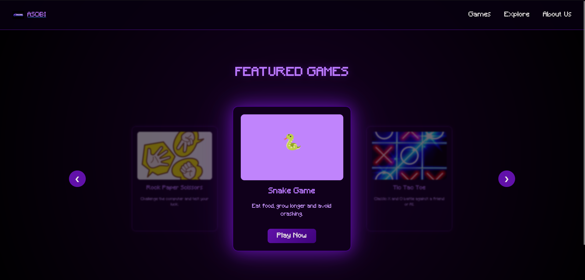

What Can You Build? — ASOBI Game Portal
A real project built with only HTML, CSS, and JavaScript — and a breakdown of the trickiest parts so you understand how it actually works.

ASOBI — Mini Game Portal
A fully functional browser-based game portal featuring Snake, Rock Paper Scissors, Tic Tac Toe, and more. Built entirely with HTML, CSS, and vanilla JavaScript — no frameworks, no libraries. This is exactly the kind of project you can build once you know the fundamentals.
ASOBI looks impressive — dark theme, glowing purple effects, animated text, a responsive navbar, and multiple working games. But when you look at the actual code, it is built from concepts you have already started learning. There is no magic here, just HTML, CSS, and JavaScript used well.
This page breaks down the parts of the code that beginners usually find confusing — not to overwhelm you, but to show you that once you understand these pieces, a project like this is completely within your reach.
ASOBI uses a custom pixel font called "Minecraft" that you won't find on Google Fonts. Instead, the font
file is stored locally inside the project and loaded manually using a CSS rule called
@font-face. You will see it declared inside a <style>
tag in the HTML.
@font-face {
font-family: "Minecraft";
/* tell the browser what to call this font */
src: url("./assets/fonts/Minecraft.ttf") format("truetype");
/* point to the actual font file on your computer */
}font-family is the name you make up — you use this name later in CSS whenever you write
font-family: "Minecraft".
The src is the path to the font file. ./assets/fonts/
means "start from the current folder, go into assets, then fonts". The format("truetype")
tells the browser what kind of font file it is — .ttf
files are always truetype.
On the welcome screen, each letter of "ASOBI" bounces independently. To make that work, each letter had to be its own separate HTML element. That is why you see this in the code instead of just writing the word normally.
<h1 class="welcome">
<span>A</span>
<span>S</span>
<span>O</span>
<span>B</span>
<span>I</span>
</h1>A <span> is an invisible inline container. It has no visual effect on its own — it just groups something so CSS can target it. Because each letter is now its own element, CSS can apply a different animation delay to each one, making them bounce at slightly different times instead of all at once.
The bouncing letters on the welcome screen are made with a CSS @keyframes animation. This is how you define a motion in CSS — you describe where something starts, where it goes, and where it ends up. Then you attach that motion to an element.
@keyframes bounce {
0%, 100% {
transform: translateY(0);
/* start and end in the original position */
}
50% {
transform: translateY(-20px);
/* at the halfway point, move 20px upward */
}
}.welcome span {
animation: bounce 1s infinite;
/* run the bounce animation, 1 second per loop, forever */
}
.welcome span:nth-child(1) { animation-delay: 0s; }
.welcome span:nth-child(2) { animation-delay: 0.1s; }
.welcome span:nth-child(3) { animation-delay: 0.2s; }
.welcome span:nth-child(4) { animation-delay: 0.3s; }
.welcome span:nth-child(5) { animation-delay: 0.4s; }
:nth-child() is a CSS selector that targets an element based on its position. :nth-child(2)
means "the second child element inside the parent." By giving each span a slightly larger delay, the letters
start their bounce at different moments, creating the wave effect. Without the delays, they would all bounce
at exactly the same time and look like a single block.
The deep dark purple background that looks like a glow in the centre of the screen is not an image — it is a single line of CSS using radial-gradient. A radial gradient radiates outward from a centre point, fading from one color to another.
body {
background: radial-gradient(circle, #1a002b, #000);
/* starts dark purple in the centre, fades to pure black at the edges */
}The word circle sets the shape of the gradient. #1a002b
is the inner color — a very dark purple. #000
is pure black, which appears at the outer edges. This single line replaces what you might expect to be a
complex background image setup.
The welcome text on the landing page scales smoothly as you resize the browser window — tiny on mobile, enormous on a big screen. This is done using the clamp() function, which lets you set a minimum size, a preferred size, and a maximum size all in one value.
.welcome {
font-size: clamp(2.5rem, 8vw, 20rem);
/* minimum preferred maximum */
}2.5rem is the smallest the text will ever be — even on a tiny phone. 8vw is the preferred size — 8% of the viewport width, so it scales as the screen gets wider. 20rem is the ceiling — no matter how large the screen is, the text will never exceed this size. Without clamp, you would need multiple media queries just to handle font scaling.
The navbar stays fixed at the top of the page as you scroll. This is done with position: sticky combined with top: 0. But there is also a z-index value on it — and that is the part beginners often miss.
.navbar {
position: sticky;
/* stays in the flow of the document but sticks when you scroll */
top: 0;
/* sticks to the very top of the viewport */
z-index: 9;
/* sits above other content so nothing overlaps it */
background: rgba(10, 0, 20, 0.8);
/* semi-transparent dark background so content shows through slightly */
}z-index controls the stacking order of elements on the page — think of it like layers in a drawing app. Higher z-index means closer to the front. Without it, page content could scroll on top of the navbar and cover it. rgba() is like a hex color but with a fourth value for transparency — 0 is invisible, 1 is fully solid, and 0.8 is mostly opaque with a slight see-through effect.
The hamburger menu icon — three horizontal lines — transforms into an X when clicked. No images are swapped, no icons are hidden and shown. The three lines literally rotate and move using CSS transform, triggered by an .active class that JavaScript adds.
/* default state — three plain lines */
.hamburger span {
width: 30px;
height: 3px;
background: #c084fc;
transition: all 0.3s ease;
/* any property that changes will animate smoothly */
}
/* when .active is added — top line rotates to form one arm of the X */
.hamburger.active span:nth-child(1) {
transform: rotate(45deg) translate(9px, 9px);
}
/* middle line disappears */
.hamburger.active span:nth-child(2) {
opacity: 0;
}
/* bottom line rotates to form the other arm */
.hamburger.active span:nth-child(3) {
transform: rotate(-45deg) translate(8px, -8px);
}The translate() inside the transform moves the line slightly so the two arms of the X cross exactly in the centre. Without the translate, the lines would rotate around their own starting points and the X would look off. The transition property on the base state is what makes it animate smoothly — without it, the change would be instant and jarring.
On desktop, the navigation links are always visible in a row. On mobile, they collapse and only appear when the hamburger is clicked. This switch is handled entirely in CSS using a @media query — a block of CSS that only applies when the screen is a certain size.
/* this entire block only runs when screen is 768px or narrower */
@media (max-width: 768px) {
.hamburger {
display: flex; /* show the hamburger button */
}
.nav-links {
position: absolute;
opacity: 0;
visibility: hidden;
transform: translateY(-20px);
pointer-events: none;
/* hidden, invisible, shifted up, and unclickable by default */
transition: all 0.3s ease;
}
.nav-links.active {
opacity: 1;
visibility: visible;
transform: translateY(0);
pointer-events: all;
/* fully visible and clickable when JavaScript adds .active */
}
}Notice that the nav is hidden using three separate properties — opacity, visibility, and
pointer-events. Just using opacity: 0
alone makes it invisible but still clickable, which would cause accidental clicks. visibility: hidden
removes it from interaction, and pointer-events: none
is a safety net. All three together plus a transition creates the smooth dropdown effect.
When you click the hamburger button, the menu opens. Click it again, it closes. This is handled by a single method: classList.toggle(). It adds the class if it is not there, and removes it if it already is — making it perfect for on/off behaviour.
const hamburger = document.getElementById("hamburger");
const navLinks = document.getElementById("navLinks");
hamburger.addEventListener("click", function(e) {
e.stopPropagation();
/* prevents the click from also triggering the document listener below */
hamburger.classList.toggle("active");
/* adds "active" if not there, removes it if it is */
navLinks.classList.toggle("active");
/* same for the nav — both toggle in sync */
});The e.stopPropagation() line is easy to miss but important. Events in JavaScript "bubble" upward — a click on the hamburger also counts as a click on the document. The code below listens for document clicks to close the menu, so without stopPropagation, clicking the hamburger would open the menu and immediately close it again. This line stops the event from travelling further up the page.
When a user clicks a nav link, the mobile menu should close automatically. Instead of adding a click listener to each link one by one, the code selects all of them at once and loops through them.
const links = navLinks.querySelectorAll("a");
/* selects every <a> tag inside the nav — returns a list */
for (let i = 0; i < links.length; i++) {
links[i].addEventListener("click", function() {
hamburger.classList.remove("active");
navLinks.classList.remove("active");
/* close both the icon and the menu */
});
}querySelectorAll returns a NodeList — similar to an array — of every element that matches
the CSS selector you give it. "a"
means every anchor tag inside the nav. The for loop then walks through each one and
attaches the same click listener. This is much cleaner than writing five separate addEventListener calls.
A common UX expectation is that clicking anywhere outside a dropdown closes it. ASOBI handles this by listening for clicks on the entire document and checking whether the click happened inside or outside the navbar elements.
document.addEventListener("click", function(e) {
if (!hamburger.contains(e.target) && !navLinks.contains(e.target)) {
/* if the click target is NOT inside the hamburger */
/* AND also NOT inside the nav links... */
hamburger.classList.remove("active");
navLinks.classList.remove("active");
/* ...then close the menu */
}
});e.target is the specific element the user clicked on. .contains() checks
whether a given element exists inside another — it returns true or false. The ! at the
start flips the result — so !hamburger.contains(e.target)
means "the click was NOT inside the hamburger". The && means both conditions must be true
for the code inside to run.
Every impressive part of ASOBI — the glowing background, the bouncing letters, the animated hamburger, the smooth mobile menu — is built from the exact concepts explained above. Custom fonts, @keyframes, clamp, sticky positioning, media queries, classList, event listeners. That is the full list.
None of these are advanced topics. They are the natural next step after you understand the basics. Build your portfolio, build your to-do list, build your quiz app — and by the time you sit down to make something like this, you will already know most of what you need.